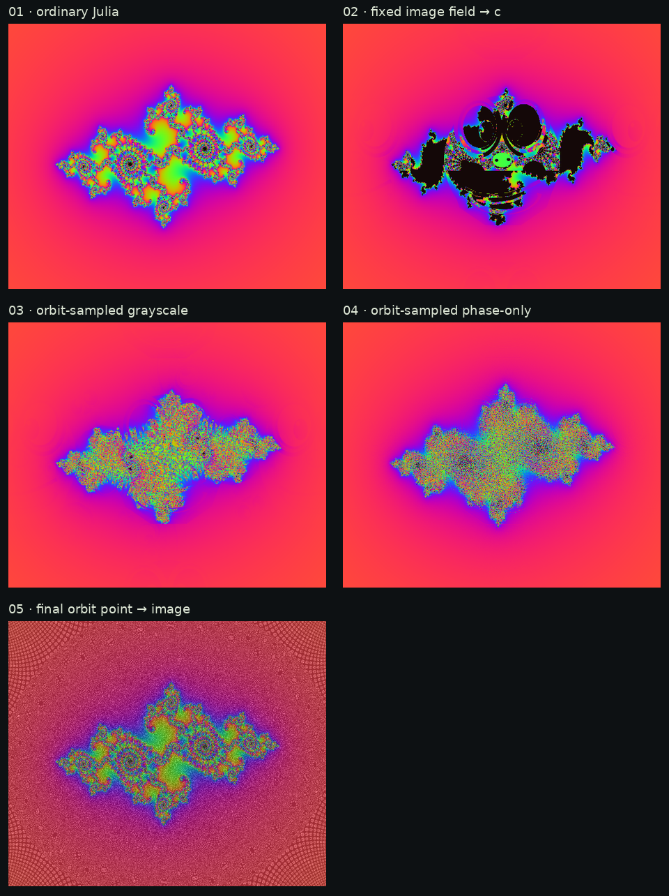
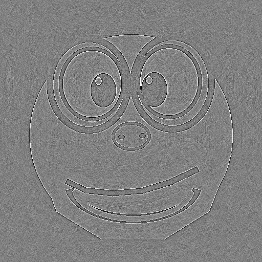
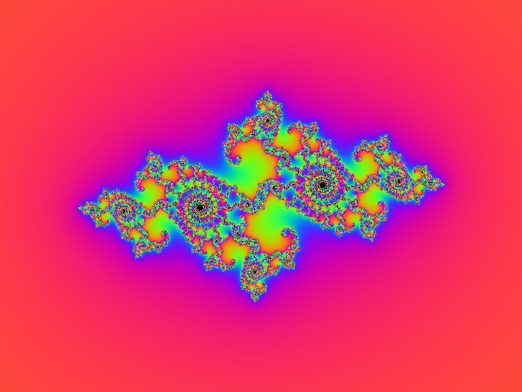
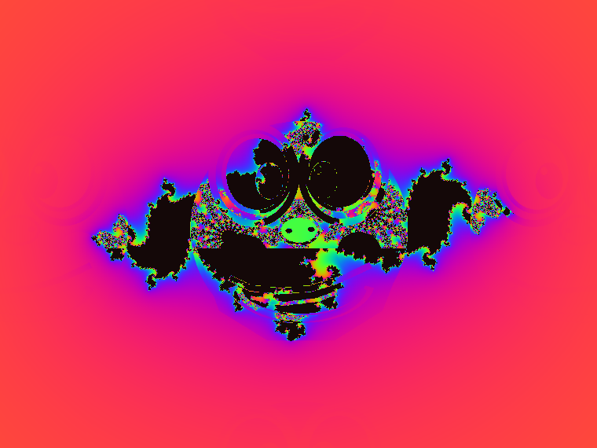
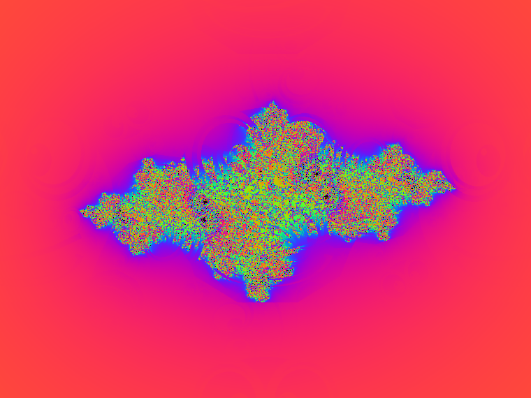
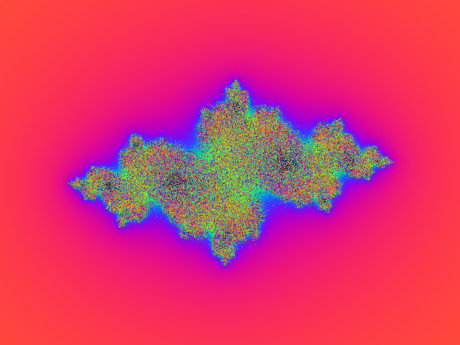
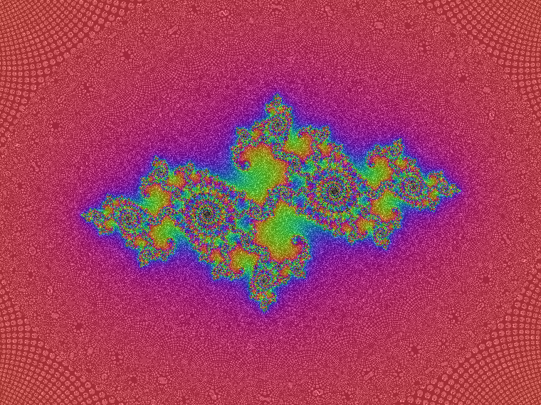

Input image
Original hand-drawn test image, converted to grayscale for the recurrence.
fourier phase · nonlinear feedback · julia maps
Can an image become part of a fractal's rule—not just a texture laid on top? I compared fixed-per-pixel forcing, orbit-sampled grayscale, Fourier phase-only feedback, and a simple final-orbit image lookup.

For a grayscale image, the Fourier transform stores phase by frequency, not by image pixel. The useful comparison is a phase-only reconstruction: keep each Fourier coefficient's angle, replace its magnitude by one, then inverse-transform. It retains some spatial structure, but much of the source's tonal information is lost.
Original hand-drawn test image, converted to grayscale for the recurrence.

Magnitude flattened; phase retained. Pearson correlation with the input after normalization: about 0.22.
zₙ₊₁ = zₙ² + c. Baseline: image does not affect dynamics.

zₙ₊₁ = zₙ² + c + α(2g(T(z₀))−1). Each starting pixel gets a fixed image-derived shift.

zₙ₊₁ = zₙ² + c + α(2g(T(zₙ))−1). The image is sampled afresh at every orbit step.

Same feedback, but the texture is the phase-only reconstruction instead of the original grayscale.

Ordinary Julia dynamics; after escape, the last orbit coordinate selects image luminance for coloring. Clear separation of geometry and source-texture mapping.

For legibility, keep a direct image-to-output mapping (fixed field or final-orbit lookup). For novel fractal structure, orbit feedback is the fun part—but every orbit folds the image through nonlinear coordinates, so the source is less directly readable. Phase-only feedback is an interesting alternate field, not a secret phase image that reconstructs Pepe by itself.
Full notes, exact equations, parameters, and the reproducible NumPy/Pillow renderer are in the experiment write-up. Source script.